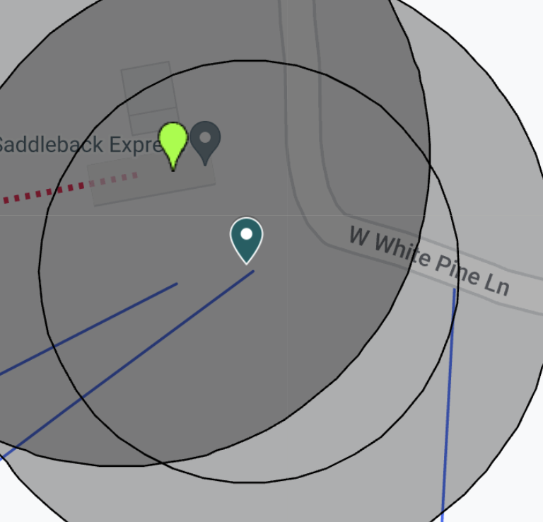
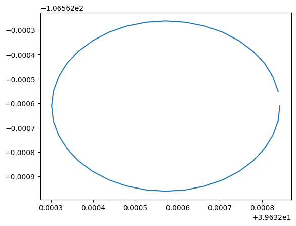

def snowflake_poc_table_grab(sf_connection):
"Grab the data from a snowflake to allow for play on GPS Data"
return f'Hello {sf_connection}!'Epic Mix Guest GPS POC
Build snowflake data asset with lat/long combinations to begin waittime QA development
This is the first data source need for the GPS POC wait times development project.
As of right now we are most likely going to be taking advantage of the Databricks Spark Engine or we might move it completely to a Snowpark Engine, which really the same thing, but both are under development in which one works best for the future prospects of the company.
snowflake_poc_table_grab
snowflake_poc_table_grab('Need a suggestion')'Hello Need a suggestion!'Creating Lat/Lon Circles Around The Lifts
Functions
process_coordinate_string
process_coordinate_string
process_coordinate_string (str)
kml2csv
kml2csv
kml2csv (fname)
Open the KML. Read the KML. Open a CSV file. Process a coordinate string to be a CSV row. Input: Filename with extension (‘example.kml’), located in ‘kml’ folder. Output: File with the same name as input, but in .csv format, located in ‘csv’ folder.
create_circle_area_around_lifts
create_circle_area_around_lifts
create_circle_area_around_lifts (df_lifts, file_name:str, kml_file_dir:str=None, number_of_vertices:int=36, radius:int=30, delete_kml:bool=True)
Example
This will be the part that needs the most work from this POC perspective as the creations of differing circle sizes is not the challenge right now the challenge is to create appropriate centroids to the lift mazes so that we can create better locations rather than something as follows:

Right now we are going to run into over laps because of the size but additionally lifts are close together what could really fix this would be the idea that we weren’t stuck to the geo lat/lon of where the lift is exactly and this overlap wouldn’t be much of an issue.
Seen below is a radius of 40 meters so making them smaller to a 30 default is what you can see inside of the functional call, but again the size of the circle is the easiest part of all of this.
What this would look like if we changed the centroid this is what we will be looking to do with this simple change
from data_system_utilities.snowflake.query import Snowflake
from data_system_utilities.snowflake.utils import create_table_query_from_df
from matplotlib import pyplot as plt/opt/hostedtoolcache/Python/3.9.15/x64/lib/python3.9/site-packages/snowflake/connector/options.py:96: UserWarning: You have an incompatible version of 'pyarrow' installed (6.0.0), please install a version that adheres to: 'pyarrow<8.1.0,>=8.0.0; extra == "pandas"'
warn_incompatible_dep(
INFO:matplotlib.font_manager:Failed to extract font properties from /usr/share/fonts/truetype/noto/NotoColorEmoji.ttf: In FT2Font: Can not load face (unknown file format; error code 0x2)
INFO:matplotlib.font_manager:generated new fontManager# Pulling in current lift lat long data locations
sf = Snowflake(
sfAccount=os.environ['sfAccount'],
sfUser=os.environ['sfUser'],
sfPswd=os.environ['sfPswd'],
sfWarehouse=os.environ['sfWarehouse'],
sfDatabase=os.environ['sfDatabase'],
sfSchema=os.environ['sfSchema'],
sfRole=os.environ['sfRole']
)
df_lifts = sf.run_sql_str('''SELECT *
FROM ONMOUNTAIN.PROD.LIFTDIMENSIONS
WHERE LATITUDE IS NOT NULL AND LONGITUDE IS NOT NULL
'''
)
df_lifts.columns = [x.lower() for x in df_lifts.columns]
df_lifts = df_lifts[['resortname','resortkey', 'liftname', 'latitude', 'longitude']]
display(df_lifts.head())
os.makedirs('./testlift/', exist_ok=True)
df_lat_lon = create_circle_area_around_lifts(df_lifts,
file_name='point_kml.kml',
kml_file_dir='./testlift/',
delete_kml=True)
display(df_lat_lon.head())
# create new snowflake data asset
sf = Snowflake(
sfAccount=os.environ['sfAccount'],
sfUser=os.environ['sfUser'],
sfPswd=os.environ['sfPswd'],
sfWarehouse=os.environ['sfWarehouse'],
sfDatabase=os.environ['sfDatabase'],
sfSchema='WAITTIMES',
sfRole=os.environ['sfRole']
)
table_query = create_table_query_from_df(df_lat_lon,
'MACHINELEARNINGOUTPUTS.WAITTIMES.lat_lon_lift_circle_waitime_qa',
True)
sf.run_sql_str(table_query)
sf.infer_to_snowflake(df=df_lat_lon, table_name='lat_lon_lift_circle_waitime_qa', if_exists='replace')
sf.run_sql_str('''SELECT *
FROM lat_lon_lift_circle_waitime_qa
where liftname = 'Arrow Bahn'
LIMIT 5
''')
# quick check to see if the function is working as intended
lift_name = 'Arrow Bahn'
plt.plot(df_lat_lon[df_lat_lon.LIFTNAME == lift_name].LAT, df_lat_lon[df_lat_lon.LIFTNAME == lift_name].LON)
plt.show()INFO:data_system_utilities.snowflake.utils:connection to snowflake established...
INFO:data_system_utilities.snowflake.query:executing query
INFO:data_system_utilities.snowflake.query:data loaded from snowflake
INFO:data_system_utilities.snowflake.query:connection to snowflake has been turned off| resortname | resortkey | liftname | latitude | longitude | |
|---|---|---|---|---|---|
| 0 | Beaver Creek Resort | 2 | Arrow Bahn | 39.632572 | -106.562612 |
| 1 | Beaver Creek Resort | 2 | Bachelor Gulch Express | 39.622782 | -106.541801 |
| 2 | Beaver Creek Resort | 2 | Birds of Prey Express | 39.585960 | -106.525253 |
| 3 | Beaver Creek Resort | 2 | Centennial Express | 39.602749 | -106.516956 |
| 4 | Beaver Creek Resort | 2 | Cinch Express | 39.582695 | -106.508131 |
INFO:root:Total number of lifts being updated 245| lat | lon | liftname | resortname | resortkey | |
|---|---|---|---|---|---|
| 0 | 39.632838 | -106.562551 | Arrow Bahn | Beaver Creek Resort | 2 |
| 1 | 39.632826 | -106.562492 | Arrow Bahn | Beaver Creek Resort | 2 |
| 2 | 39.632806 | -106.562437 | Arrow Bahn | Beaver Creek Resort | 2 |
| 3 | 39.632779 | -106.562387 | Arrow Bahn | Beaver Creek Resort | 2 |
| 4 | 39.632746 | -106.562344 | Arrow Bahn | Beaver Creek Resort | 2 |
INFO:root:
create or replace table MACHINELEARNINGOUTPUTS.WAITTIMES.lat_lon_lift_circle_waitime_qa (lat VARCHAR, lon VARCHAR, liftname VARCHAR, resortname VARCHAR, resortkey VARCHAR);
INFO:data_system_utilities.snowflake.utils:connection to snowflake established...
INFO:data_system_utilities.snowflake.query:executing query
INFO:data_system_utilities.snowflake.query:data loaded from snowflake
INFO:data_system_utilities.snowflake.query:connection to snowflake has been turned off
INFO:data_system_utilities.snowflake.query:Table LAT_LON_LIFT_CIRCLE_WAITIME_QA successfully created.
INFO:data_system_utilities.snowflake.query:creating table lat_lon_lift_circle_waitime_qa
INFO:data_system_utilities.snowflake.query:sqlalchemy snowflake engine created
INFO:data_system_utilities.snowflake.query:table created
INFO:data_system_utilities.snowflake.utils:connection to snowflake established...
INFO:data_system_utilities.snowflake.query:executing query
INFO:data_system_utilities.snowflake.query:data loaded from snowflake
INFO:data_system_utilities.snowflake.query:connection to snowflake has been turned off
Pyspark Read Azure GPS Data For Development
I wish databricks was actively working on the connection between their clusters and python, but that is a couple of tracks of work that will come together at some point so for now this is a nice to have. I will be moving towards working in docker locally and trying to avoid issues with the mac so that this can be tested more easily and better documented outside of the databricks ecosystem